Префектура Сига · Хиконэ · пиво
Пивоварня «Хиконэ бакусю»: крафтовое пиво у подножия горы Кодзин
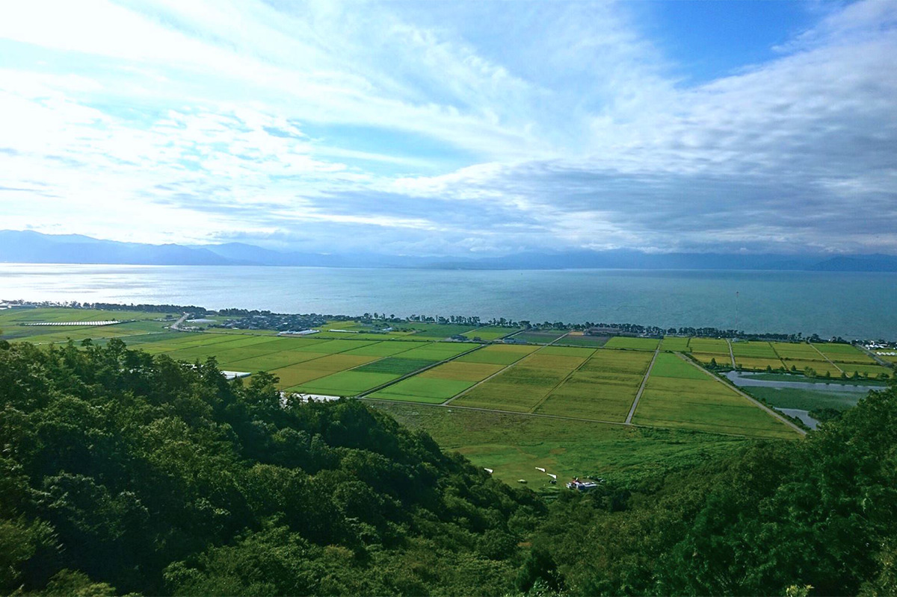
У подножия горы Кодзин в Хиконэ, среди рисовых полей у озера Бива, в 2021 году открылась пивоварня «Хиконэ бакусю». Её цель звучит почти дерзко: варить пиво, в котором солод, хмель и дрожжи будут целиком из Хиконэ.
История
Земля, которую не пахали
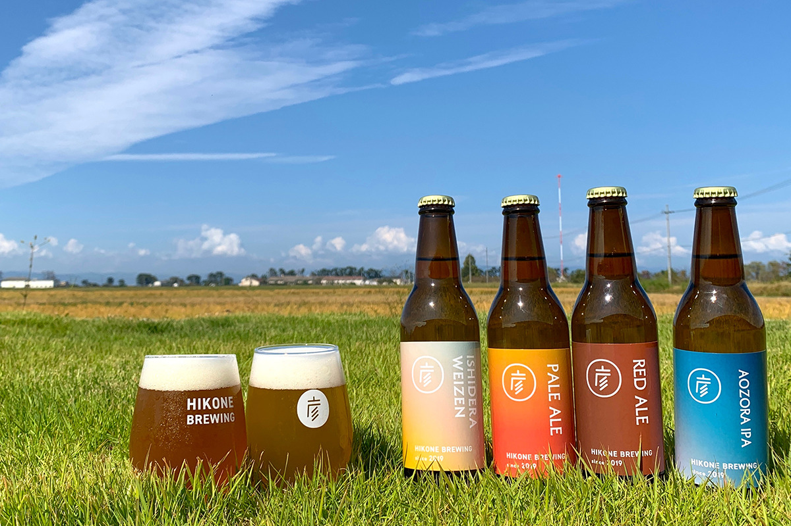
Хиконэ стоит на восточном берегу озера Бива. У подножия горы Кодзин, среди полей, лежит деревня Исидэра, а рядом с ней пруд Сонэнума. Возле пруда есть большой участок, который не числится сельскохозяйственными угодьями. Земля принадлежит самим жителям деревни, и они много лет думали, как её использовать.
В 2017 году профессор Префектурального университета Сиги предложил построить здесь пивоварню как цех переработки сельской продукции. Деревня, университет и предприниматели объединились в проект, который должен был жить в согласии с природой и не истощать её. Своей пивоварни у новой компании поначалу не было, поэтому пивовары учились на чужом производстве в другой префектуре и тем временем придумывали сорта. В мае 2021 года на части участка открылась пивоварня «Хиконэ бакусю» (Hikone Brewing).
Задачи у неё две. Первая: сохранить деревенскую общину Исидэры и передать её следующему поколению. Вторая: сварить «Ол Хиконэ бир», пиво целиком из сырья Хиконэ.
Здание
Деревянный дом с двумя крышами
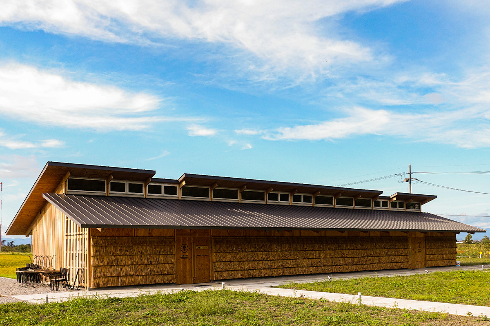
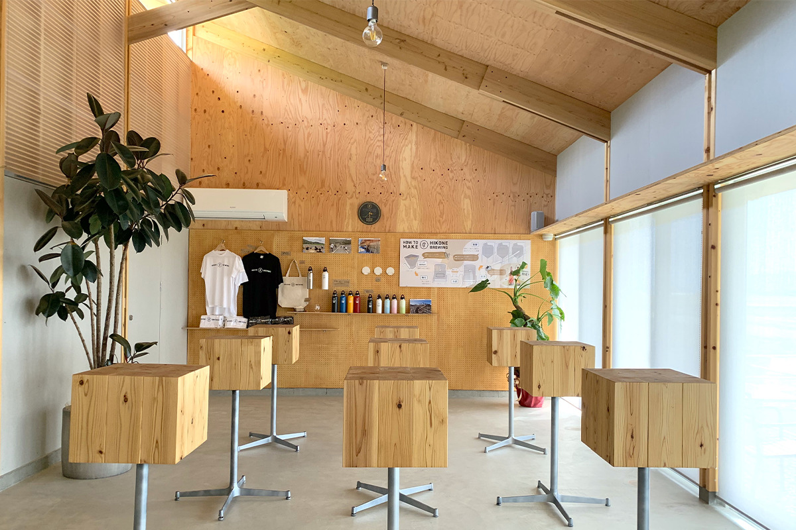
Здание проектировала команда во главе с профессором кафедры экологической архитектуры того же университета, вместе со студентами и архитектурным бюро его выпускников. Главная идея проекта: пивоварня должна вписаться в природу вокруг и не вредить ей. Это одноэтажный деревянный дом под двумя крышами, который не спорит с пейзажем у горы Кодзин. Днём внутри хватает естественного света, а вентиляция устроена так, чтобы впускать ветер с озера Бива.
В 2021 году здание получило премию за устойчивое пространство на японском конкурсе пространственного дизайна.
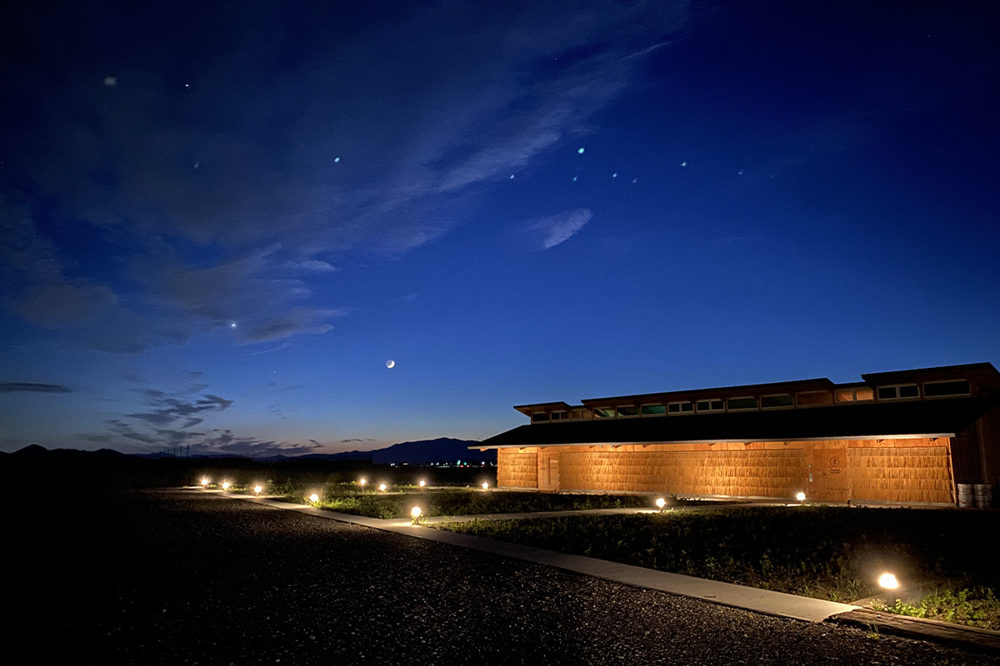
Сырьё
Всё своё, от ячменя до дрожжей
Пивовары хотят, чтобы солод, хмель и дрожжи были на сто процентов из Хиконэ. Дрожжи выводят вместе с профессором Университета биологических наук Нагахамы. С июня 2021 года ячмень и хмель начали выращивать сами: за посевы взялись жители деревни и студенты Префектурального университета Сиги.
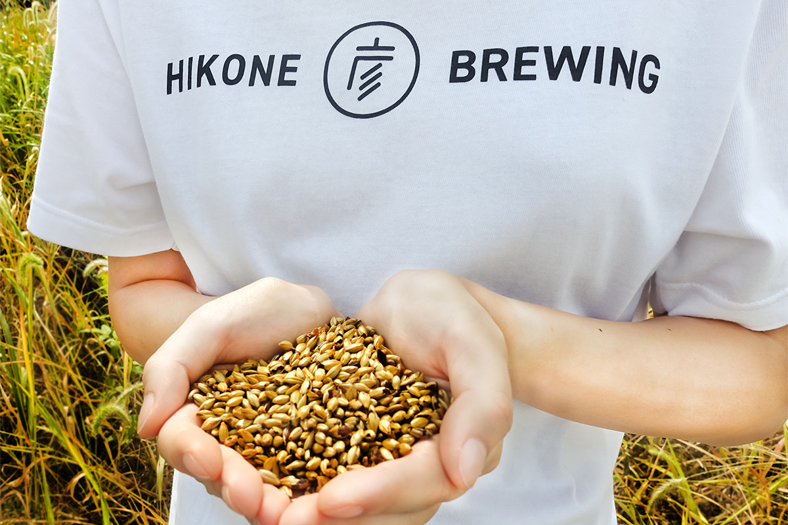
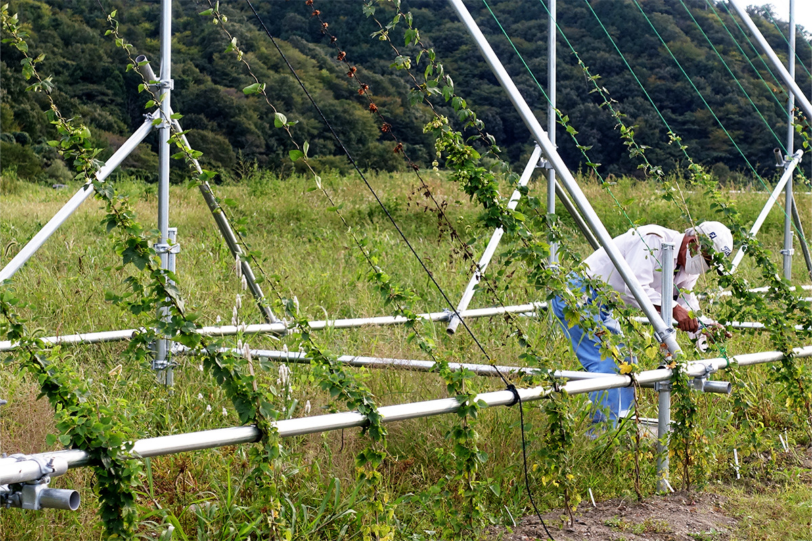
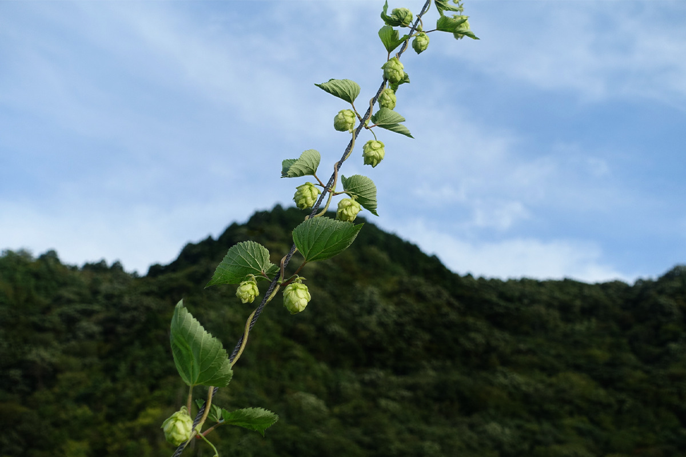
Экология
Пивоварня почти без отходов
Кроме собственного сырья, пивоварня старается возвращать в оборот всё, что остаётся после варки. Пивную дробину не выбрасывают, а продают: она идёт на корм местному скоту, на удобрение для полей и даже в сладости. Воду при варке расходуют как можно экономнее. Сами пивовары называют свою цель «пивоварней замкнутого цикла». В 2021 году они строили новую систему очистки стоков, которую собирались вскоре запустить.
В магазине при пивоварне тоже стараются меньше тратить. Покупателям предлагают приходить со своей сумкой, а пиво можно унести в фирменном гроулере, многоразовой фляге, которая держит газ. Так становится меньше бутылок и крышек.
Сорта
Что попробовать
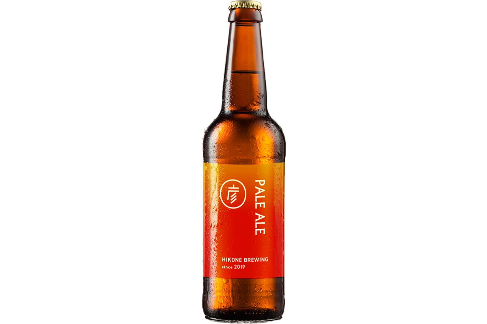
«Пейл эль» пьётся легко: в аромате цитрусы, горечь чистая и короткая. Крепость 5,5%, солод английский и немецкий, горечь 27 IBU. Эта шкала, международные единицы горечи, показывает, насколько пиво горькое, исходя из количества хмеля, и позволяет сравнивать любые сорта мира.
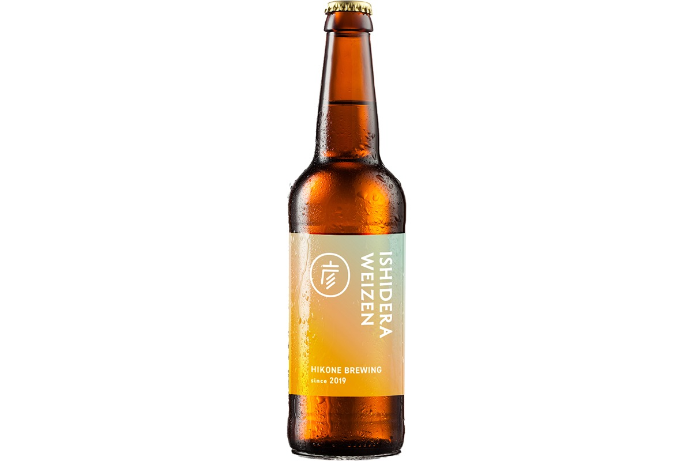
«Исидэра вайцен» варят с сырой пшеницей из самой Исидэры. У него лёгкая пшеничная кислинка и мягкий солодовый вкус. Крепость 5,5%, в составе немецкий солод, овёс и пшеница, горечь всего 8 IBU.
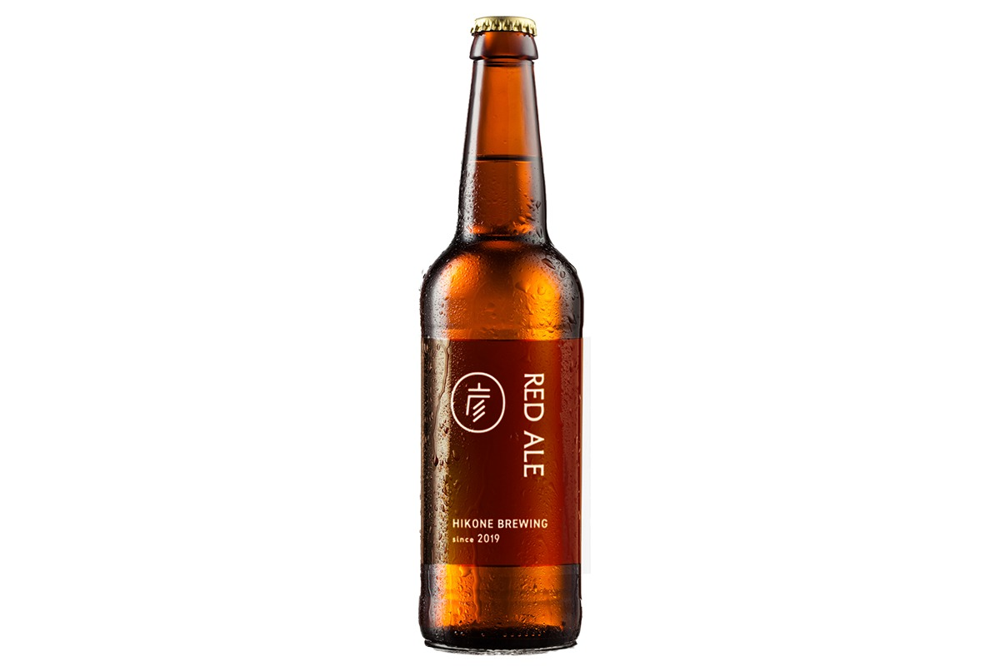
«Портер» тёмно-коричневый, но лёгкий. Пивовары советуют пить его с шоколадом или сливочным сыром. Крепость 5,5%, солод канадский и английский, горечь 30 IBU.
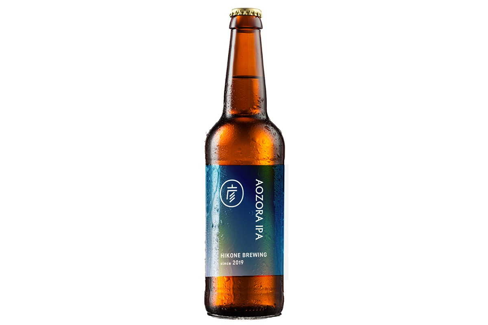
«Аодзора ИПА», то есть «ИПА голубого неба», самый горький из сортов: яркий хмелевой аромат, насыщенный солод и резкая горечь в 37 IBU. Крепость 5,5%.
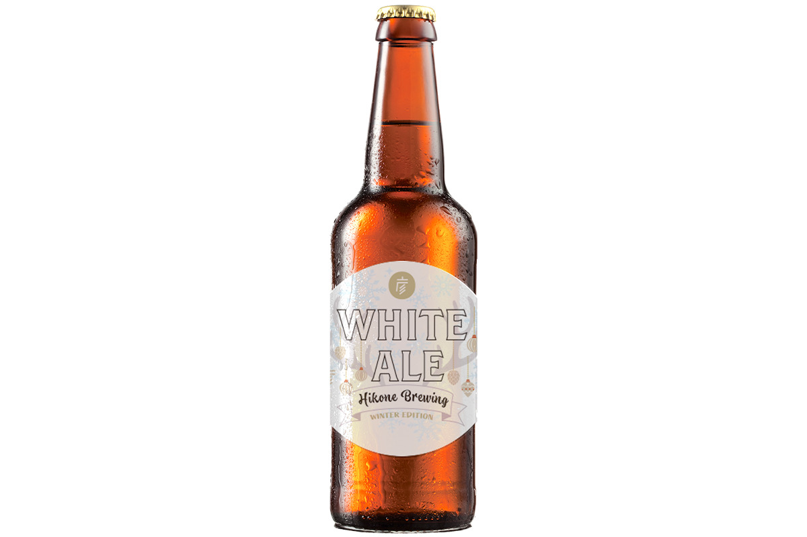
«Уайт эль» варят только зимой. В нём пшеничный солод, апельсиновая цедра, кориандр и лемонграсс, который пивовары выращивают сами. Аромат лёгкий цитрусовый, вкус с кислинкой. Крепость 6%, горечь 8 IBU.
Во всех сортах доля солода не меньше 50%.
Визит
Как добраться
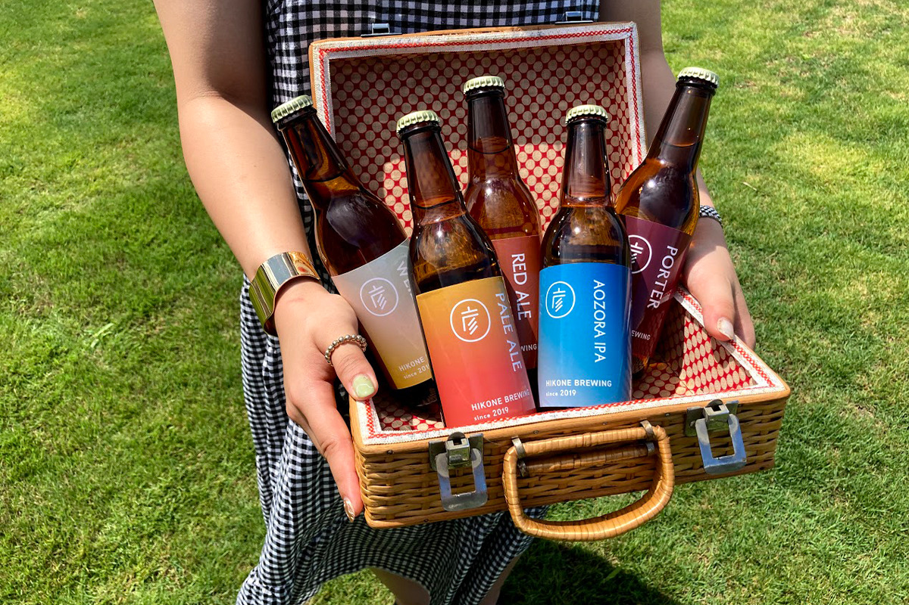
При пивоварне работает магазин, и в его углу можно продегустировать пиво (дегустация платная). От станции Кавасэ на линии JR Бивако до пивоварни около 15 минут на машине.
«Хиконэ бакусю», пивоварня Кодзинъяма
- Адрес
- префектура Сига, Хиконэ, Исидэра-тё, 1853
- Часы работы
- понедельник, четверг, пятница 11:00–17:00; суббота, воскресенье и праздники 11:00–18:00
- Выходные
- вторник, среда
- Как добраться
- от станции Кавасэ (линия JR Бивако) 15 минут на машине
- Сайт
- hikonebrewing.jp